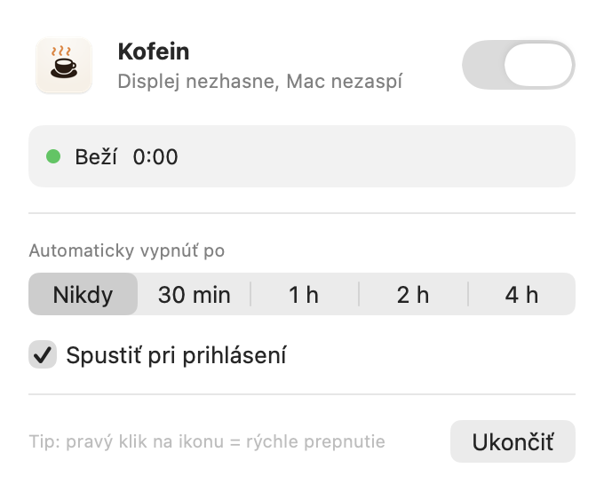

Keep your Mac awake.
A tiny menu bar app that stops your Mac from sleeping and the display from turning off. One click, nothing else.
Download for Mac
Small, but enough
One click
Left-click the cup for the panel, right-click to switch on or off instantly.
Auto-off timer
Turn off after 30 min, 1, 2 or 4 hours – or never.
Launch at login
Starts with your Mac and remembers whether it was on.
Nothing extra
Uses the built-in macOS caffeinate. No tracking, no internet, no Dock icon.
Install
- Download and unzip
Download Kofein.zip and double-click it.
- Move to Applications
Drag Kofein.app into the Applications folder and open it.
- Allow it once
Kofein isn't signed with a paid Apple certificate, so macOS will block the first launch. Open System Settings → Privacy & Security, scroll down and click “Open Anyway”.
Prefer Terminal? This does the same as step 3:
xattr -dr com.apple.quarantine /Applications/Kofein.app
Note: the app's interface is currently in Slovak.